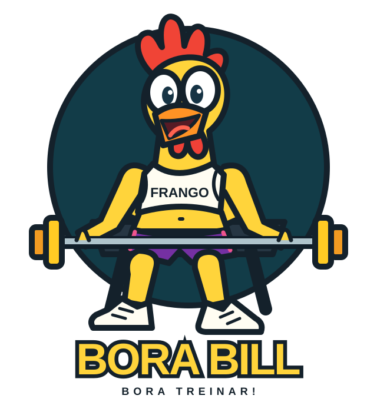

Frango AppMonte seus dias, escolha os músculos e exercícios e acompanhe cargas, repetições e histórico neste navegador.
Abra o menu lateral para acessar sua ficha, montar treinos e explorar a biblioteca.
Minha Ficha
Execute os exercícios. Ao concluir, ele vai para o final da fila.
Meu Treino
Escolha o dia → músculos → exercícios. A ficha é gerada automaticamente.
Biblioteca de Exercícios Referência ↗
Pesquise por exercício, músculo ou equipamento. Consulte a fonte para detalhes de execução.
Recomendações
Escolha um objetivo para ver uma estrutura baseada em revisões e diretrizes.
Gerar treino com ChatGPT
Preencha suas preferências e gere um documento pronto para enviar.
Configurações
Gerencie suas sessões, consulte o histórico e cuide dos dados salvos neste navegador.
Sessões e histórico
Inicie outra sessão de um dia da ficha mantendo as cargas e o histórico.
Backup
Exporte sua ficha e histórico em JSON ou restaure um backup salvo.
Excluir dados / reset
Apaga a ficha de todos os dias e o histórico deste navegador. Exporte um backup antes se quiser preservar os dados.